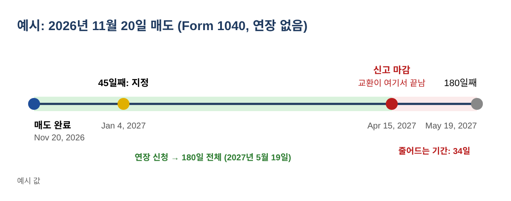
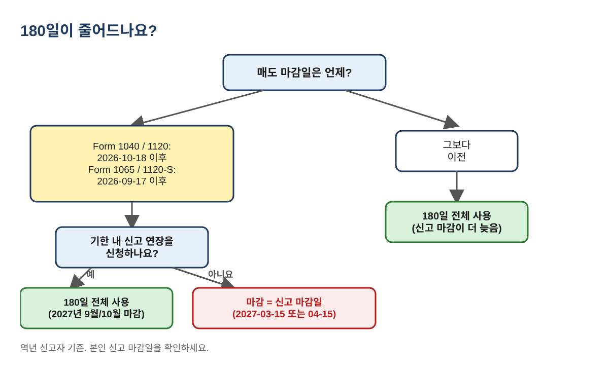
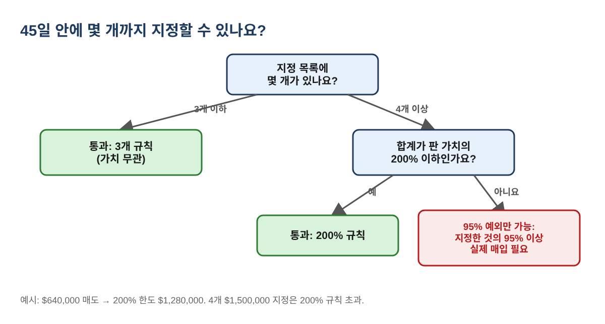
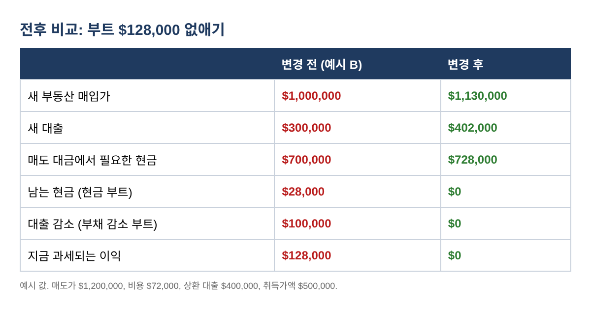

1031 교환 마감일 계산법: 45일·180일 날짜 찾기와 2026년 연말 매도의 '신고 마감일 함정'
올해 임대 주택이나 상가 건물 같은 투자용 부동산을 팔고, 1031 교환(동종 자산 교환)으로 양도 이익 과세를 미루려는 분이라면 매도가 끝난 날부터 이미 두 개의 시계가 돌고 있습니다. 둘 중 하나라도 놓치면 교환이 인정되지 않아 올해 이익 전체에 세금이 붙을 수 있습니다. 특히 2026년 가을 이후에 판 분들은 잘 알려지지 않은 함정이 하나 더 있습니다. 세금 신고 마감일이 180일보다 먼저 와서 교환 기간을 끝내 버릴 수 있다는 점입니다.
이 글은 달력과 간단한 엑셀(또는 구글 시트)만으로 내 마감일을 찾고, 대체 부동산을 몇 개까지 지정할 수 있는지, 지금 세금이 붙는 금액(부트)이 얼마인지 직접 계산하는 방법을 정리했습니다.
두 개의 마감일 한눈에 보기
| 마감 | 해야 할 일 | 계산 방법 |
|---|---|---|
| 45일 지정 기간 | 살 부동산을 서명한 서면으로 지정 | 매도 후 45일째 자정까지 |
| 교환 기간 | 대체 부동산 매입(이전) 완료 | 180일째와 매도 연도 신고서 마감일(연장 포함) 중 빠른 날 |
영업일이 아니라 달력 일수로 셉니다. 기존 부동산이 이전된 날부터 세며, 같은 교환으로 여러 건을 팔았다면 가장 먼저 이전된 날이 기준입니다. 주말이나 공휴일 때문에 마감이 늦춰진다고 가정하지 마세요. 45일째나 180일째가 토·일요일이면 그 전 금요일까지 끝내는 것으로 계획하는 편이 안전합니다.
1단계: 45일째와 180일째 날짜 구하기
A2 칸에 매도 마감일을 넣고 아래 수식을 입력하세요 (엑셀·구글 시트 모두 동작).
- 45일째:
=A2+45 - 180일째:
=A2+180 - 요일 확인:
=TEXT(A2+45,"dddd")는 요일 이름,=WEEKDAY(A2+45,2)>5는 주말이면 TRUE
결과 칸은 날짜 형식으로 바꿔 주세요. 2026년 11월 20일에 팔았다면 45일째는 2027년 1월 4일, 180일째는 2027년 5월 19일입니다.
2단계: 신고 마감일 함정 확인
교환 기간은 180일째와 매도 연도 신고서 마감일(연장 포함) 중 빠른 날에 끝납니다. 연장을 신청하지 않으면 원래 마감일이 적용됩니다. IRS Publication 509 기준 2026 역년 신고 마감일은 다음과 같습니다.
| 신고 종류 (2026 역년) | 원래 마감일 | 연장 시 마감일 | 이 날 이후 매도하면 단축 |
|---|---|---|---|
| 개인 Form 1040 | 2027-04-15 | 2027-10-15 | 2026-10-18 이후 |
| C 법인 Form 1120 | 2027-04-15 | 2027-10-15 | 2026-10-18 이후 |
| 파트너십·다인 LLC Form 1065 | 2027-03-15 | 2027-09-15 | 2026-09-17 이후 |
| S 법인 Form 1120-S | 2027-03-15 | 2027-09-15 | 2026-09-17 이후 |
엑셀에서는 B2에 신고 마감일(개인이면 =DATE(YEAR(A2)+1,4,15))을 넣고, 실제 마감일은 =MIN(A2+180,B2), 줄어드는 일수는 =MAX(0,(A2+180)-B2)로 구합니다.

해결 방법은 간단하지만 시기가 중요합니다. 매도 연도 신고서의 연장을 기한 안에 신청하세요 (개인 Form 4868, 파트너십·법인 Form 7004). 연장하면 마감일이 2027년 10월 15일 또는 9월 15일로 늦어져 180일을 모두 쓸 수 있습니다.

3단계: 지정 규칙 고르기
45일째 자정까지 살 부동산 목록을 내야 합니다. 규정이 허용하는 방법은 세 가지입니다.
- 3개 규칙: 가치와 관계없이 3개까지
- 200% 규칙: 개수 제한 없이, 시가 합계가 판 부동산 가치의 200% 이하
- 95% 예외: 개수·가치 제한은 없지만 지정 합계의 95% 이상을 실제로 매입해야 함 (사실상 거의 전부)

엑셀 점검: C2:C9에 지정할 부동산 가치, E2에 판 가치를 넣고 =COUNT(C2:C9)<=3(3개 규칙), =SUM(C2:C9)<=2*E2(200% 규칙)를 확인합니다. 둘 다 FALSE면 95% 예외만 남습니다.
지정 서면은 본인이 서명하고, 본인이나 자격 없는 사람(본인 대리인 등)이 아닌 교환 관계자, 보통 적격 중개기관(QI)에게 전달합니다. 주소나 법적 지번처럼 부동산을 분명하게 적으세요. 45일 안에 실제로 매입한 부동산은 지정한 것으로 봅니다.
4단계: 부트(지금 과세되는 부분) 추정
이익은 재투자한 만큼만 이연됩니다. 동종 부동산이 아닌 것을 받으면 부트라고 하며, 이익은 부트 금액까지 과세됩니다. 흔한 부트는 재투자하지 않고 남은 현금, 그리고 새 대출이 갚은 대출보다 적은데 그 차이를 현금으로 메우지 않은 경우의 부채 감소입니다.
| 항목 (예시 값) | 계산 | 예시 B |
|---|---|---|
| 순매도가 | 매도가 − 매도 비용 | $1,200,000 − $72,000 = $1,128,000 |
| QI 보관 자기자본 | 순매도가 − 상환 대출 | $1,128,000 − $400,000 = $728,000 |
| 매입에 필요한 현금 | 새 매입가 − 새 대출 | $1,000,000 − $300,000 = $700,000 |
| 현금 부트 | MAX(0, 자기자본 − 필요 현금) | $28,000 |
| 부채 감소 부트 | MAX(0, 기존 대출 − 새 대출 − 추가 현금) | $400,000 − $300,000 = $100,000 |
| 실현 이익 | 순매도가 − 조정 취득가액 | $1,128,000 − $500,000 = $628,000 |
| 지금 과세되는 이익 | MIN(실현 이익, 부트 합계) | $128,000 |
| 새 취득가액 | 기존 취득가액 + 추가 현금 + 새 대출 − 기존 대출 − 현금 부트 + 과세 이익 | $500,000 |
엑셀 수식: 현금 부트 =MAX(0,(S-C-L1)-(P-L2)), 부채 감소 부트 =MAX(0,L1-L2-MAX(0,(P-L2)-(S-C-L1))), 과세 이익 =MIN(S-C-B,현금부트+부채부트). 여기서 S=매도가, C=매도 비용, B=조정 취득가액, L1=상환 대출, P=새 매입가, L2=새 대출입니다.
전액 이연의 기준은 '순매도가 이상으로 사고, 현금 자기자본을 모두 재투자'입니다. 예시 B에서 매입가를 $1,130,000, 새 대출을 $402,000로 바꾸면 두 가지 부트가 모두 사라집니다.

예시 3가지
| 예시 | A: 여름 매도 | B: 연말 매도 | C: 파트너십 |
|---|---|---|---|
| 매도일 / 신고 종류 | 2026-08-03 / 1040 | 2026-11-20 / 1040 | 2026-10-01 / 1065 |
| 45일째 | 2026-09-17 | 2027-01-04 | 2026-11-15 (일요일) |
| 연장 없을 때 최종일 | 2027-01-30 | 2027-04-15 (34일 단축) | 2027-03-15 (15일 단축) |
| 지금 과세되는 이익 | $0 | $128,000 | $1,600 |
한 번 더 확인할 특수한 경우
- 본인 거주 주택: 투자 목적이 아니므로 해당하지 않습니다.
- 되팔 목적(플리핑): 판매 목적으로 보유한 부동산은 제외됩니다.
- 장비·차량: 2018년부터 부동산만 대상입니다.
- 매도 대금 수령: 대금이 본인에게 지급되면 교환이 깨질 수 있습니다. 마감 전에 QI를 정해야 합니다.
- 특수관계인 거래: 본인이나 상대방이 2년 안에 팔면 이연 이익이 과세될 수 있고, 이후 2년간 Form 8824도 냅니다.
- 캘리포니아 부동산을 팔고 타주 부동산을 산 경우: 교환 연도와 이후 매년, 이연된 캘리포니아 이익이 과세될 때까지 FTB 3840을 제출합니다.
- 재난 지역: IRS 재난 구제 공지로 마감이 연기되는 경우가 있으니 해당 카운티를 IRS 재난 구제 페이지에서 확인하세요.
흔한 실수
- 매도 마감 후에야 QI를 정함
- 45일을 영업일로 계산
- 10월 중순 이후 매도(파트너십·S 법인은 9월 중순 이후)인데 신고 마감일을 놓침
- 판 가치의 200%가 넘는 4개 이상 지정
- 현금을 보태지 않고 대출만 줄여 부채 감소 부트 발생
자주 묻는 질문
마감일이 주말이면 하루 더 주나요?
그렇게 계획하지 마세요. 달력 일수로 계산하고 주말 전에 끝내는 것이 안전합니다.
이미 신고서를 냈는데 문제가 되나요?
연말 매도라면 교환 기간이 매도 연도 신고서 마감일에 묶입니다. 일찍 신고했거나 연장하지 않았다면 바로 세무 전문가와 상의하세요.
지정 목록을 바꿀 수 있나요?
45일째 자정까지만, 같은 방식(서명한 서면)으로 바꿀 수 있습니다.
1031 교환에서 손실은 공제되나요?
아니요. 손실이 나는 경우에는 일반 매도가 나을 수 있으니 전문가와 확인하세요.
어떤 서식으로 신고하나요?
기존 부동산을 이전한 연도의 신고서에 Form 8824를 첨부합니다.
체크리스트
- 매도 마감 전 QI 계약
- 마감일 입력, 45일째·최종일을 달력에 기록
- 45일째까지 서명한 지정 서면 전달
- 연말 매도라면 원래 신고 마감 전에 연장 여부 결정
- 최종일까지 같은 명의로 대체 부동산 매입 완료
- Form 8824 제출, 캘리포니아 규정 해당 시 FTB 3840
위 과정을 그대로 해 주는 1031 교환 마감일 & 부트 계산기 2026은 아래 무료 키트 다운로드에서 가입 없이 무료로 받으실 수 있습니다(엑셀 + PDF 가이드).
이 글은 교육용 정보이며 세무·법률·투자 자문이 아닙니다. 규정은 바뀔 수 있고 개인 사정에 따라 결과가 달라집니다. 실행 전에 QI와 세무 전문가에게 확인하세요. 예시의 숫자는 모두 가상이며, 규정은 2026년 11월에 확인했습니다.
무료 키트 다운로드
글에서 설명한 내용을 그대로 따라 할 수 있는 도구입니다. 가입 없이 바로 받으세요.
- Excel 계산 도구 (.xlsx)1031_Exchange_Deadline_Calculator_2026_EN_KR.xlsx · 23 KB
- 단계별 가이드 (PDF)1031_Exchange_Guide_2026_EN_KR.pdf · 402 KB
본인과 본인 사업에 무료로 쓰세요. 재판매·재배포는 하지 마세요. 일반 정보이며 세무·법률·회계 자문이 아닙니다. 숫자는 본인 자료로 꼭 확인하세요.